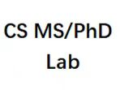
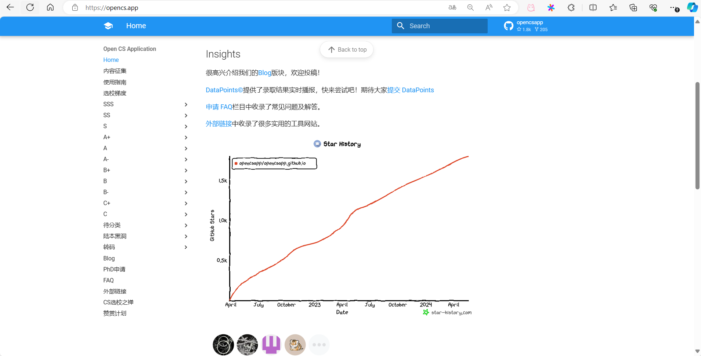
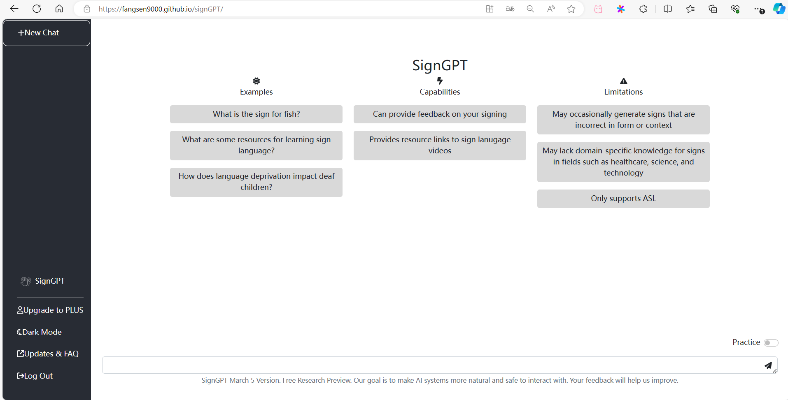

|
Projects
I am the maintainer or upgrader of the following projects, they were not necessarily led by me or first proposed.
Website
|
 |
24-25Fall PhD Application Group
Owener, QQ goup ID: 231622772
As its name suggests, it is a QQ group of over 500 PhD applicants.
|
|
 |
OpenCS App: North American graduate school selection website
Maintainer
Praise the author of the project: Flash!
[Project Website]
|
|
 |
SignGPT: A demonstration to experience the concept of the future
I plan to improve it based on my SignLLM and SignDiff to carry out sign language recognition and generation in real time
It was first proposed by an open source team at the University of Rochester, thanks to them.
[Demo]
|
Patents
|